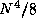
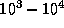
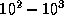
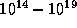
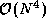
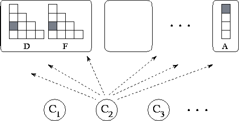
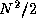
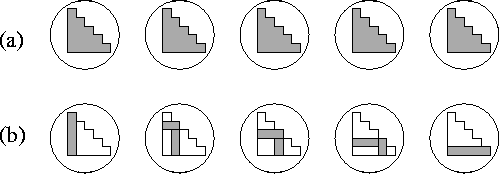
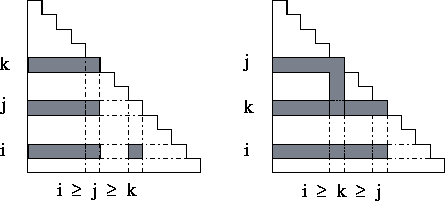

![[DBPP]](pictures//asm_color_tiny.gif)


![[Search]](pictures//search_motif.gif)
Our third case study, like the first, is from computational science. It is an example of an application that accesses a distributed data structure in an asynchronous fashion and that is amenable to a functional decomposition.
Computational techniques are being used increasingly as an alternative to experiment in chemistry. In what is called ab initio quantum chemistry , computer programs are used to compute fundamental properties of atoms and molecules, such as bond strengths and reaction energies, from first principles, by solving various approximations to the Schrödinger equation that describes their basic structures. This approach allows the chemist to explore reaction pathways that would be hazardous or expensive to explore experimentally. One application for these techniques is in the investigation of biological processes. For example, Plate 6
shows a molecular model for the active site region in the enzyme malate dehydrogenase, a key enzyme in the conversion of glucose to the high-energy molecule ATP. This image is taken from a simulation of the transfer of a hydride anion from the substrate, malate, to a cofactor, nicotinamide adenine diphosphate. The two isosurfaces colored blue and brown represent lower and higher electron densities, respectively, calculated by using a combined quantum and classical mechanics methodology. The green, red, blue, and white balls are carbon, oxygen, nitrogen, and hydrogen atoms, respectively.
Fundamental to several methods used in quantum chemistry is the need
to compute what is called the Fock matrix, a two-dimensional
array representing the electronic structure of an atom or molecule.
This matrix, which is represented here as F, has size
N
 N
and is formed by evaluating the following
summation for each element:
N
and is formed by evaluating the following
summation for each element:
where D is a two-dimensional array of size
N
 N
that is only read, not written, by this
computation and the I represent integrals that are
computed using elements i
, j
, k
, and l
of a
read-only, one-dimensional array A with
N
that is only read, not written, by this
computation and the I represent integrals that are
computed using elements i
, j
, k
, and l
of a
read-only, one-dimensional array A with  elements. An
integral can be thought of as an approximation to the repulsive force
between two electrons.
elements. An
integral can be thought of as an approximation to the repulsive force
between two electrons.
Because Equation 2.3 includes a double summation, apparently 2 integrals must be computed for each element of F, for a total of 2 integrals. However, in practice it is possible to exploit redundancy in the integrals and symmetry in F and reduce this number to a total of . When this is done, the algorithm can be reduced to the rather strange logic given as Algorithm 2.3. In principle, the calculation of each element of F requires access to all elements of D and A; furthermore, access patterns appear highly irregular. In this respect, the Fock matrix construction problem is representative of many numeric problems with irregular and nonlocal communication patterns.
For the molecular systems of interest to chemists, the problem size N may be in the range . Because the evaluation of an integral is a fairly expensive operation, involving  operations, the construction of the Fock matrix may require  operations. In addition, most methods require that a series of Fock matrices be constructed, each representing a more accurate approximation to a molecule's electronic structure. These considerations have motivated a considerable amount of work on both efficient parallel algorithms for Fock matrix construction and improved methods that require the computation of less than  integrals.
Because the Fock matrix problem is concerned primarily with the symmetric
two-dimensional matrices F and D, an obvious partitioning
strategy is to apply domain decomposition techniques to these matrices
to create N(N+1)/2
tasks, each containing a single element from
each matrix (, ) and responsible for the
operations required to compute its . This yields
N(N+1)/2
tasks, each with data and each responsible for
computing 2 integrals, as specified in Equation 2.3.
integrals, as specified in Equation 2.3.
This domain decomposition strategy is simple but suffers from a significant disadvantage: it cannot easily exploit redundancy and symmetry and, hence, performs eight times too many integral computations. Because an alternative algorithm based on functional decomposition techniques is significantly more efficient (it does not perform redundant computation and does not incur high communication costs), the domain decomposition algorithm is not considered further.

Figure 2.31: Functional decomposition of Fock matrix problem. This
yields about  data tasks, shown in the upper part of the
figure, and  computation tasks, shown in the lower part of the
figure. Computation tasks send read and write requests to data
tasks.
computation tasks, shown in the lower part of the
figure. Computation tasks send read and write requests to data
tasks.
Quite a different parallel algorithm can be developed by focusing on the computation to be performed rather than on the data structures manipulated, in other words, by using a functional decomposition. When redundancy is considered, one naturally thinks of a computation as comprising a set of integrals (the integral procedure of Algorithm 2.3), each requiring six D elements and contributing to six F elements. Focusing on these computations, we define ``computation'' tasks, each responsible for one integral.
Having defined a functional decomposition, we next need to distribute
data structures over tasks. However, we see no obvious criteria by
which data elements might be associated with one computation task
rather than another: each data element is accessed by many tasks. In
effect, the F, D, and A arrays constitute large data
structures that the computation tasks need to access in a distributed
and asynchronous fashion. This situation suggests that the techniques
described in Section 2.3.4 for asynchronous communication
may be useful. Hence, for now we simply define two sets of ``data''
tasks that are responsible only for responding to requests to read and write
data values. These tasks encapsulate elements of the two-dimensional
arrays D and F ( , ) and of the
one-dimensional array A (), respectively. In all,
our partition yields a total of approximately
, ) and of the
one-dimensional array A (), respectively. In all,
our partition yields a total of approximately  computation
tasks and data tasks (Figure 2.31).
computation
tasks and data tasks (Figure 2.31).
We have now defined  computation tasks and
computation tasks and  data
tasks. Each computation task must perform sixteen communications: six
to obtain D matrix elements, four to obtain A matrix
elements, and six to store F matrix elements. As the
computational costs of different integrals can vary significantly,
there does not appear to be any opportunity for organizing these
communication operations into a regular structure, as is advocated in
Section 2.3.2.
data
tasks. Each computation task must perform sixteen communications: six
to obtain D matrix elements, four to obtain A matrix
elements, and six to store F matrix elements. As the
computational costs of different integrals can vary significantly,
there does not appear to be any opportunity for organizing these
communication operations into a regular structure, as is advocated in
Section 2.3.2.
On many parallel computers, the cost of an integral will be comparable to the cost of a communication. Hence, communication requirements must be reduced by agglomeration. We describe two alternative strategies that can be used to achieve this goal. Their data requirements are illustrated in Figure 2.32.

Figure 2.32: Agglomeration strategies for Fock matrix construction with
N=P=5
, for (a) the total replication algorithm and (b) the partial
replication algorithm. In each case, the five tasks are shown with
shading used to represent the portion of the symmetric D and
F matrices allocated to each task. In (a), each matrix is
replicated in each task. In (b), each task is given a single row and
column; this corresponds to a factor of two
replication.
1. Total replication. Communication costs can be cut dramatically by replicating the F and D matrices in each of P tasks, one per processor of a parallel computer. Each task is given responsibility for 1/P of the integrals. Computation can then proceed in each task without any communication. The only coordination required is a final summation to accumulate partial F matrices. This can be achieved using a parallel vector reduction algorithm described in Section 11.2.
The technique of replicating data structures on each processor of a parallel computer is commonly used in parallel computing to reduce software engineering costs. It allows an existing sequential code to be adapted quickly for parallel execution, since there is no need to modify data structures. The principal disadvantage of the technique is that it is nonscalable. Because total memory requirements scale with the number of tasks created, the largest problem that can be solved is determined not by the total amount of memory in a parallel computer, but by the amount available in a single processor. For example, on a 512-processor computer with 16 MB of memory per processor, an implementation of the quantum chemistry code DISCO that uses this strategy cannot solve problems with N>400 . In principle, it would be interesting to solve problems where N is 10 times larger.

Figure 2.33: Data requirements for integral clusters. Each task accesses
three rows (and sometimes columns) of the D and F
matrices.
2. Partial replication. An alternative approach is as follows.
First, we agglomerate computation in what seems an obvious way, namely,
by making the inner loop of the procedure fock_build in
Algorithm 2.3 into a task. This yields  computation
tasks, each responsible for
computation
tasks, each responsible for  integrals. Next, we examine the
communication requirements of each such task. We find that there is
considerable locality in the data required by these clusters of
integrals: each cluster accesses the i
th, j
th, and
k
th row (and sometimes column) of D and F
(Figure 2.33). To exploit this locality, we
agglomerate data to create N
data tasks, each containing a
row/column pair of the two-dimensional arrays D and F and
all of the one-dimensional array A. In this scheme, each
element of D and F is replicated once, and A is
replicated N
times, so total storage requirements are increased
from an average of N
to 3N
per task. Because of this
replication, each computation task now requires data from just three
data tasks. Hence, the number of messages is reduced from
integrals. Next, we examine the
communication requirements of each such task. We find that there is
considerable locality in the data required by these clusters of
integrals: each cluster accesses the i
th, j
th, and
k
th row (and sometimes column) of D and F
(Figure 2.33). To exploit this locality, we
agglomerate data to create N
data tasks, each containing a
row/column pair of the two-dimensional arrays D and F and
all of the one-dimensional array A. In this scheme, each
element of D and F is replicated once, and A is
replicated N
times, so total storage requirements are increased
from an average of N
to 3N
per task. Because of this
replication, each computation task now requires data from just three
data tasks. Hence, the number of messages is reduced from  to
to  . The total volume communicated remains . Because
the cost of communicating a word is typically much less than the cost
of computing an integral, this is an efficient parallel algorithm.
. The total volume communicated remains . Because
the cost of communicating a word is typically much less than the cost
of computing an integral, this is an efficient parallel algorithm.
The ``partial replication'' Fock matrix construction algorithm creates
N
data tasks and computation tasks. We use the notation
(i j k)
to identify the computation task responsible for
computing the  integrals I
; this task requires
data from data tasks i
, j
, and k
. To complete the
parallel algorithm, we must define a mapping of data and computation
tasks to processors.
integrals I
; this task requires
data from data tasks i
, j
, and k
. To complete the
parallel algorithm, we must define a mapping of data and computation
tasks to processors.
We assume processors. Since each data task will receive roughly the same number of requests, we allocate one data task to each processor. This leaves the problem of mapping computation tasks. We can imagine a variety of approaches:
We have developed two alternative parallel algorithms for the Fock matrix construction problem.
 integrals.
These tasks are mapped to processors either
statically or using a task-scheduling scheme.
integrals.
These tasks are mapped to processors either
statically or using a task-scheduling scheme.
This case study illustrates some of the tradeoffs that can arise in the design process. The first algorithm slashes communication and software engineering costs; however, it is not scalable. In contrast, the second algorithm has higher communication costs but is highly scalable: its memory requirements increase only with problem size, not the number of processors. To choose between the two algorithms, we need to quantify their parallel performance and then to determine the importance of scalability, by assessing application requirements and the characteristics of the target parallel computer.
© Copyright 1995 by Ian Foster